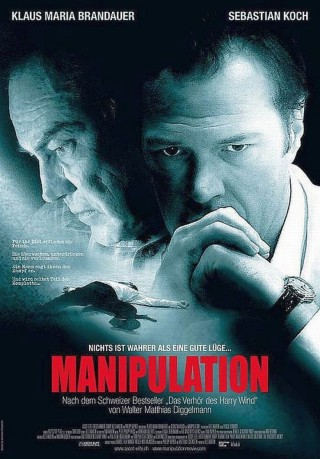
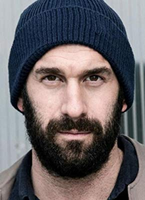

#3962 Manipulation
 
 IMDB-Wertung: 6.3 / 10
IMDB-Wertung: 6.3 / 10  Metascore: 0
Metascore: 0 
1956. Die Zeit des Kalten Krieges. Der Schweizer Staatsschutz überwacht zehn Prozent der eigenen Bevölkerung. Als ein kompromittierendes Foto den Star-Reporter Werner Eiselin als sowjetischen Spion entlarvt, ist dieser dem Druck nicht gewachsen und nimmt sich im Verhörraum das Leben. Spezialagent Urs Rappold von der Antispionage-Abteilung plagen Zweifel: Waren die Fotos wirklich echt? Und warum hat der einflussreiche PR-Berater Dr. Harry Wind die Fotos überhaupt machen lassen? In einem gnadenlosen Katz-und-Maus-Spiel mit dem manipulativen Geschichten-Erfinder Wind realisiert Rappold, dass er selbst Teil eines Komplotts ist…
Jahr: 2011
Dauer: 91 Minuten
FSK:
Land: Schweiz Studio: EuroVideoTonspuren:
Untertitel:
Auflösung: 1080p (1920x1080) Größe: 8796 MB
Genre: Thriller, Drama
Regisseur: Pascal Verdosci
Drehbuch: Don Jones
Soundtrack:
Darsteller:
 Klaus Maria Brandauer als Urs Rappold
Klaus Maria Brandauer als Urs Rappold Sebastian Koch als Harry Wind
Sebastian Koch als Harry Wind- Thomas Douglas als Bundespolizist Koller
- Susanne Abelein als Romy Hartmann
- Markus Merz als Werner Eiselin
- Peter Schröder als Bundespolizeichef Wagner
- Vincent Leittersdorf als Kommandant Kurz
- Chantal Le Moign als Bundesanwältin
-  Urs Jucker als Vital Berger
- Helmut Förnbacher als Korpskommandant Sturzenegger
- Rahel Hubacher als Frau Eiselin
- Martin Hug als Kantonspolizist Zaugg
- Hans-Rudolf Twerenbold als Polizeiarzt
- Oliver Bürgin als Polizeifotograf
- Martin Engler als Reporter Luchsinger
- Matthias Schuppli als Reporter Fabian
- Raphael Traub als Mazotti - Reporter
- David Köhne als Journalist
- Erosi Margiani als Offizier
- Steven Maryns als Julius
- Jean-Christophe Nigon als Journalist
- David Tobias Schneider als Journalist
- David Schröder als Journalist
- Joschua Schueren als Security
- Timo Schueren als Security
- Adam Sikora als Freddy-Journalist
- Matthias Zelazko als Taxifahrer
Datei: X:\2011(G-M)\Manipulation (2011, FSK, 1920x1080).mkv seit 06.07.2016
Festplatte: HD 2011(G-Z)
 Es gibt insgesamt 100 Filme in der Gruppe '2011(G-M)'
Es gibt insgesamt 100 Filme in der Gruppe '2011(G-M)'